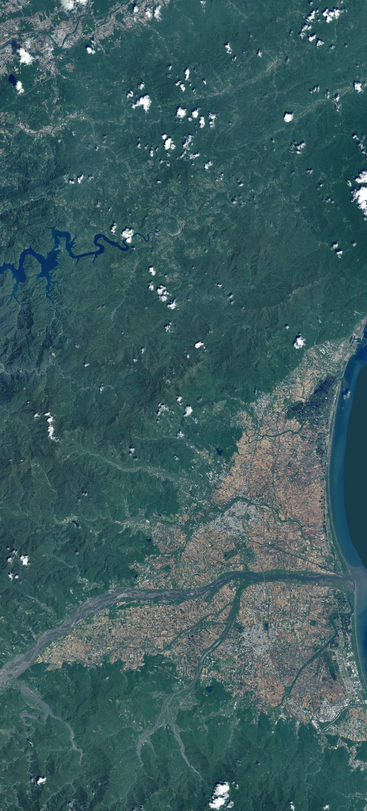

2026.07.23・行政院核定北宜高鐵
你要從哪裡，
去宜蘭？
政府要花 3,521.75 億蓋北宜高鐵。同一條走廊還有另一個方案，北宜直鐵。選出你的起點，看這兩條路各要怎麼搭、換幾次車、花多久。
開一張票 ↓從你家到宜蘭，
這兩條路怎麼搭？
西部到南港是現行高鐵，兩案都一樣、也不是這筆錢要蓋的。真正的差別從南港開始。
才省 3 分鐘，你要我買單？
出處與口徑
兩案到宜蘭各鄉鎮的行車時間，出自監察院 115 交調 0004 調查報告圖 7「北宜『高鐵』案及『直鐵』案行車時間比較圖」（PDF 第 36 頁）：高鐵案（已加計轉乘臺鐵時間 10 分鐘）頭城 59、礁溪 51、宜蘭 41、羅東 46、蘇澳新 59 分鐘；直鐵案（自強直達／半直達）頭城 32、礁溪 39、宜蘭 41、羅東 49、蘇澳新 64 分鐘。該圖資料來源標示為「陳訴人提供」，非鐵道局估算。鐵道局自身估算為高鐵 28 分鐘（台北至南港 8 分＋南港至宜蘭 20 分）、直鐵 56 至 64 分鐘（台北至南港 10 分＋46 至 54 分），監察院載明該估算「未加計轉乘時間，是以該局應予加計轉乘時間進行比較分析」（同報告表 3、第 35 頁）。另交通部運研所模式情境分析：若宜蘭站兩鐵間轉乘時間大於 25 分鐘，預估約 50% 北部往返花東旅次將選擇全程搭乘台鐵（同報告表 7）。高鐵宜蘭站站址為「縣政中心以南」方案，與台鐵宜蘭新站平行共站、經地面層轉乘（交通部 2022.01.27 審查會議結論；鐵道局計畫資訊專區）；全線約 60.6 公里，宜蘭端僅此一站。西部至台北為現行高鐵既有路網，台灣高鐵公告台北至台南約 83 分、台北至左營約 95 分（直達車），其餘各站以高鐵官網時刻表查詢為準，本頁不列推估值。分攤金額＝建造成本 3,521.75 億 ÷ 全國人口 23,243,565 人（內政部 2026 年 6 月底統計）。
轉乘的計算方式：本頁只計入「確定會發生」的換乘。宜蘭端，高鐵在宜蘭只設一站，要到頭城、礁溪、羅東、蘇澳新都必須換乘臺鐵，圖 7 已加計 10 分鐘；直鐵行駛臺鐵路線、直接停靠既有五站，監察院調查意見稱之為「到站即到家的優勢」，故不加計。西部端，走直鐵必須在南港由高鐵換乘臺鐵，因兩者軌距與系統不同、無法直通，本頁據實標示但不估分鐘數；走高鐵是否由西部直通宜蘭，監察院調查報告載明「本件『高鐵延伸宜蘭計畫』之興建與營運模式，亦迄未依前瞻基礎建設特別條例確認營運模式」，尚未確定，故同樣不估。所有轉乘與接駁的分鐘數，凡查無可引用出處者一律不列推估值。
高鐵延伸宜蘭
最快 2029 動工、2036 到 2037 通車。今年出生的孩子，小四才搭得到；但錢，現在就要開始燒。
出處
鐵道局計畫專區、中央社與公視 2026.07.23 報導。通車年官方說法有 2036 與 2037 兩版本。
兩條路線，
停的站完全不同
北宜高鐵全線約 60.6 公里，在宜蘭只設一站，位置在宜蘭市壯二、縣政中心以南約 350 公尺。北宜直鐵走臺鐵路線，沿途停既有的頭城、礁溪、宜蘭、羅東、蘇澳新五站。

南港 頭城 礁溪 宜蘭 高鐵宜蘭站 羅東 蘇澳新高鐵宜蘭站（宜蘭端唯一一站） 直鐵停靠的既有臺鐵車站 起點南港
中間那片深色的山就是雪山山脈。全線要開 10 座隧道從底下穿過。
出處與繪製方式
底圖為內政部國土測繪中心「臺灣通用電子地圖正射影像」（國土測繪圖資服務雲免申請介接服務，圖層代號 PHOTO2），zoom 13，涵蓋約 26×58 公里。各點位置由實際經緯度換算成影像百分比座標標定，可回推驗證。高鐵宜蘭站站址為「縣政中心以南」方案，位於宜蘭市壯二、縣政中心以南約 350 公尺、縣政府東南側（交通部 2022.01.27 審查會議結論）。本圖不繪製路線線形：本站未取得可公開的高鐵線形圖資，畫一條線就是捏造。全線約 60.6 公里、10 座隧道：鐵道局計畫資訊專區、環評報告書。
還沒動工，
價錢先漲了三倍多
鐵道局 2019 年初步可行性規劃估 955 億，2022 年 1 月估 1,880 億，2025 年 6 月估 3,521.75 億，行政院照這個數字核定。這七年之間，一根樁都還沒打下去。
出處
逐年估算：鐵道局 2019.10 初步可行性規劃 955 億（自由時報 2019.10）；111 年 1 月估 1,880 億、114 年 6 月估 3,521.75 億（監察院 115 交調 0004 調查報告）；行政院 2026.07.23 核定 3,521.75 億（中央社 2026.07.22 鐵道局說明）。本頁只計建造成本，不計通車後的營運支出與臺鐵票收影響。
從「評估直鐵」，
一路改到「核定高鐵」
轉向不是 2024 才開始。用高鐵取代直鐵的決定，在前一任政府任內就已經做完。
交通部指示辦理高鐵延伸宜蘭初步評估
北宜新線（直鐵）綜合規劃陳報後遭退回，並要求納入高鐵議題
直鐵顧問契約「加入」高鐵工作，此後同一份契約修改 9 次
交通部審查會議定案：宜蘭站採「縣政中心以南」方案
加速會議指各單位「推動態度均不夠積極」，環評與綜合規劃自此改為平行作業，後續再開 5 次進度追蹤。
賴清德就任；陳金德同日就任政務委員
政院開「高鐵延伸宜蘭計畫加速推動審查程序研商會議」，陳金德主持
交通部依該會議結論提報階段性報告，轉請國發會審查
二階環評通過。高鐵與特定區拆成兩案分開環評
監察院列出五項調查意見。兩個多月後，行政院照樣核定 3,521.75 億。
政院開特定區進度追蹤會議，陳金德主持：請參考桃園、新竹經驗「檢討調高容積率」，認為規劃的約 200% 過低
監察院調查報告經民團揭露，列五項調查意見，含 420 公頃特定區缺乏立論基礎
行政院核定，總經費 3,521.75 億
出處
2024.06.21 與 2026.01.23 兩場會議之名稱、主持人與結論，出自監察院 115 交調 0004 調查報告：行政院 113 年 6 月 21 日召開「高鐵延伸宜蘭計畫加速推動審查程序研商會議」（由陳金德政務委員主持），指出「各相關單位的推動態度均不夠積極」，指示環評與綜合規劃採平行作業，後續再召開 5 次進度追蹤會議；交通部依該結論於 113 年 9 月 27 日提報階段性報告。115 年 1 月 23 日「高鐵宜蘭車站特定區計畫進度追蹤會議」同由陳金德主持，提出「請參考桃園、新竹高鐵特定區經驗，檢討調高容積率」（會議認為規劃之住宅區及產業專用區容積率約 200% 實屬過低）。2019.04.19 交通部指示辦理高鐵延伸宜蘭初步評估、2019.08.30 北宜新線綜合規劃陳報後遭退回並要求納入高鐵議題、2022.01.27 站址審查結論：交通部鐵道局計畫資訊專區大事紀、宜蘭縣政府交通處計畫辦理情形。監察院 115 交調 0004 調查報告全文未載審議或公布日期，本站因此不標日期；報告載明 115 年 2 月 9 日詢問行政院、交通部、鐵道局、國發會、環境部及工程會等機關主管人員後「已調查竣事」，最早見於 2026.05.12 中央社報導。調查委員：林盛豐、蘇麗瓊、施錦芳。報告列五項調查意見（報告本身未使用「違失」一詞），處理辦法為函請行政院督同相關部會參處。
考卷沒寫完，就先蓋章了
監察院的考卷，逐題點開看：
✗沒寫完可行性研究，就跳綜合規劃▾
可行性報告僅 17 頁；系統從直鐵換成高鐵，卻沒有回頭重做可行性。
✗同一份顧問契約改 9 次▾
從「評估北宜直鐵」一路改成「評估高鐵延伸」，追加金額達原約 60%。同一個團隊，先寫直鐵不行，再寫高鐵可以。
✗可研與綜規內容大量相似▾
兩份不同階段的報告，內容大量摘錄重複，審查形同走過場。
✗政委下場設定時程▾
陳金德主持會議設定通過時程，環評與綜合規劃平行趕工。
✗社會溝通只靠法定說明會▾
主要依賴環評法定說明會，實質公民參與不足。
✗自償率僅 6.8%，補貼規模不明▾
監察院報告載：「據鐵道局表示，本計畫財務自償率 6.8%，無法完全自償（未達 100%）。」桃捷綠線前例：官方當年說 41.77%，監院後來認定只有 2.53%。差額，全民付。
✗420 公頃需求缺乏立論▾
特定區從 190 公頃暴增到 420 公頃，監察院直指缺乏充分立論基礎。
✗高鐵與特定區拆開環評▾
兩案分開評估，累積的整體衝擊從頭到尾沒被一次評估過。
出處
監察院調查報告（聯合報 2026.05.13）、ETtoday 2026.07.22（契約修改 9 次追加 60%）、Newtalk 2026.07.22（自償率 6.8%、桃捷綠線對照）。
土地與生態，
還有兩筆帳
這兩件事不影響前面的時間與金錢比較，但影響的是宜蘭往後幾十年的樣子。點開自己看。
地價先漲了，
斷層還在那裡
那 420 公頃裡有 6 個傳統聚落。核定隔天，站區建案開價已喊到 4 字頭，投機客比照航空城模式卡位抵價地。
而腳下這段路要穿過雪山斷層帶：當年雪隧遭遇 98 處剪裂帶、單點每秒 750 公升湧水。這次，時速 300。
出處
環境資訊中心 2025.08.21、2023.06.02（環委稱斷層帶「非常多」）、監察院 115 交調 0004 調查報告、時代力量官網 2026.06.11（190→420 公頃、85% 私有地）、自由時報地產天下 2026.07.24（房價與抵價地卡位）、雪山隧道工程紀錄（地質風險前例；現行路線官方稱已避開翡翠水庫集水區）。